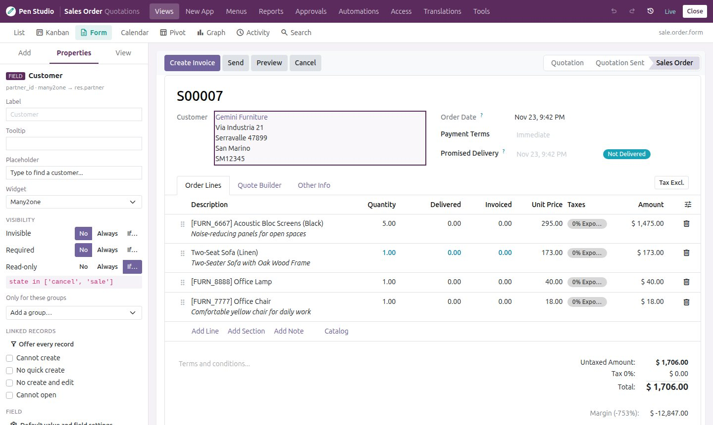

Odoo Mates · free and open source
Odoo Mates Pen Studio
Change any screen of Odoo, build new apps, design PDF reports, add approvals, automations and access rights. All by clicking and dragging, without code, and free.
Drag & drop editorEvery view typeApp builderReport designerApprovalsAutomationsAccess rightsUndo & versionsExport as a moduleCommunity & Enterprise

Everything at a glance
Open the Studio from the pen in the top bar, on any screen. What you change is a draft only you see, until you publish it.
Edit on the real screen
The form, list or kanban you were on, with your own records. Click to select, drag to move, drop new fields where they go.
Every view type
Forms, lists, kanban, search, calendar, pivot, graph and activity views, each with the settings that matter.
New fields of any kind
Text, numbers, amounts, dates, selections, priority stars, links, tags, lines, files, pictures, signatures, related fields and totals.
Buttons, tabs and stages
Smart buttons that count linked records, header buttons, tabs, columns, ribbons, a chatter, and stages with a status bar in one click.
Build new apps
An app with its own menu and icon, made from ready features: stages, responsible, contact, dates, amount, tags, lines and more.
PDF reports from blocks
Titles, text with fields, tables of lines with totals, addresses, pictures, codes: on a live preview of a real record.
Approvals on buttons
A button only runs once a group or a person approved it, for every record or only some. Checked on the server.
Automations and access
Plan activities, send emails or set fields on their own; decide who reads, edits, creates and deletes, and check any user.
Safe by design
Drafts, undo and redo, published versions you can compare and restore, a health check after updates, and export as a real module.
A closer look
Each part of the Studio, as it looks in Odoo 20.
Drag fields where they belong
Drag a new field or an existing one onto the form: a line shows where it lands. Name it, and it is on the screen at once, in your draft.
Visibility without code
Hide a field, make it required or read-only, always or only when a condition is true. Conditions are built from rows with Odoo's own editor; groups restrict who sees it.
Lists, kanban and search
Optional columns, totals, editable lists and sorting; kanban columns and cards; filters and group-bys built with the domain editor.
The search view, as three lists
The fields searched as you type, the filters and the group-bys: add, rename, reorder and remove them.
An app in a minute
Name it, pick its colour and the features it needs. Pen makes the model, the form, list, kanban, calendar and search views, the menus and the icon.
Menus of any app
Rename, reorder, hide and add menus, or open the views a menu shows straight in the Studio.
PDF reports, designed live
Start from the fields the form shows, add blocks, write text with {{ fields }}, and see the report of a real record as you go. Add blocks above or below the reports of modules too.
Approvals that cannot be skipped
When an approval is missing, the button shows who has to approve instead of running. Approvers approve or reject; others ask with an activity.
Automations
When a record is created, changed, or a date comes: plan an activity, send an email, set a field or log a note. Test any rule on a record now.
Access rights
Give a group access to some or all records, restrict everybody, create groups, and see what a user can do and how many records they see.
Drafts, undo and versions
Every step can be undone. Each publication is kept: compare it with the one before and restore it in one click.
Health check, export and import
After a module update, see what no longer fits in one place. Export everything as an installable module, and import it back to keep editing.
How it stays safe
Nothing live until you publish
Changes are a draft only the Studio shows. Publish makes them live for everyone; Discard throws them away.
Real inherited views
Every change is a standard inherited view of Odoo. A change that no longer fits after an update is skipped and listed, never breaking the screen.
Your data stays
Removing a field from a view keeps its data. Deleting a custom field first shows everything that uses it.
Questions we get
Does it work on Enterprise too?
Yes. Pen Studio works on Odoo Community and Enterprise. It only depends on the web module.
Is it really free?
Yes, LGPL-3 and free, with every feature on this page.
What happens if I uninstall it?
The views it generated are removed with it, so the screens go back to standard. Custom fields and their data stay.
Can I move my work to another database?
Yes. Tools > Export makes an Odoo module you can install anywhere, or import back into Pen to keep editing.
Who can use it?
Users of the Customize Views group; administrators have it. Changing the data model (new fields, apps, access) is for administrators.
Also from Odoo Mates